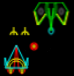

El juego

SpaceShips Adventure! nació en mi época de colegio secundario, por el año 2000. Era un juego de naves espaciales hecho en Turbo Pascal v7, celebrado por amigos y compartido en los equipos del laboratorio del colegio.
Hoy, el juego original se revive como un experimento de migración e inteligencia artificial, con la misma energía de la época y una mirada nostálgica al código, las variables crípticas y la lógica de aquella primera versión.
El proyecto
Con ayuda de GitHub Copilot, recreé un videojuego que hice hace años para que pueda jugarse en un navegador web moderno. La idea fue probar el potencial de la IA para migrar el juego de plataforma, dejando que trabaje con la implementación que eligiera sola, más que diseñar una versión moderna o decidir personalmente la arquitectura.
Tanto la nueva versión del juego como el sitio web fueron desarrollados por la IA. El repositorio GitHub contiene los prompts y respuestas del agente (no el razonamiento, dada la extensión).
Primero reconstruimos la librería gráfica BGI de Pascal y luego migramos uno a uno los sprites (gráficos de cada nave), el menú y la pantalla principal del juego; implementamos el movimiento de jugadores y enemigos, disparos, detección de colisiones, "pastillas" de poderes especiales y el registro en el Ranking (implementado en almacenamiento local del navegador).
El resultado es una recreación que respeta el espíritu del original, aunque no sea una réplica exacta.
Me limité a dirigir la migración y solo hice correcciones manuales mayormente menores, además de editar el texto del sitio.
Yo
Me llamo Lucas —"Locutus" para algunos, "Luqui" o "Lu" para otros. Aprendí a programar en forma autodidacta de muy chico, luego lo reforcé académicamente; llevo años trabajando en IT (¡me pagan y todo!), y vivo en Buenos Aires, 🇦🇷 Argentina.
Estudié en la EET Nro. 1 "Julio Argentino Roca" (ex-Industrial) de Pergamino, época en que nacieron SpaceShips Adventure! y otros juegos: uno de memoria, un snake, un solitario, un bomberman y quizá algún otro que no recuerdo...
Imágenes del original
Capturas históricas, activos y piezas del juego original tal como se reconstruyeron del proyecto original.


Imágenes imaginadas por la IA
Estas imágenes acompañan el proyecto como una interpretación creativa de la IA. No son capturas del juego original, sino representaciones inspiradas por el espíritu de SpaceShips Adventure!.